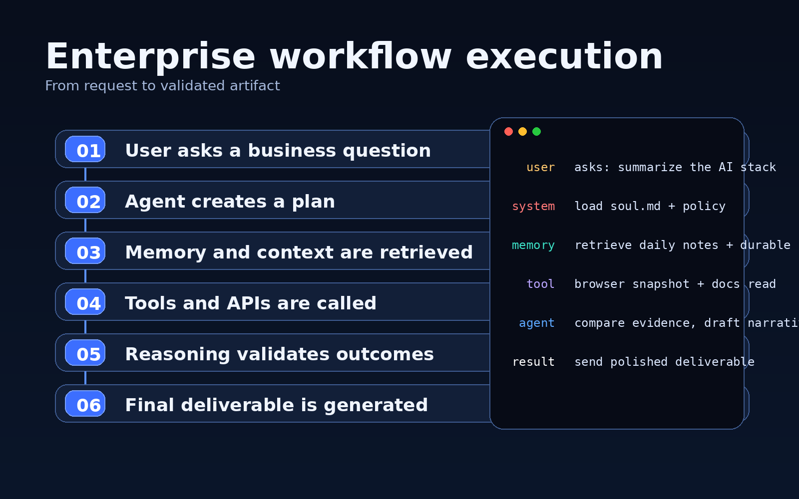
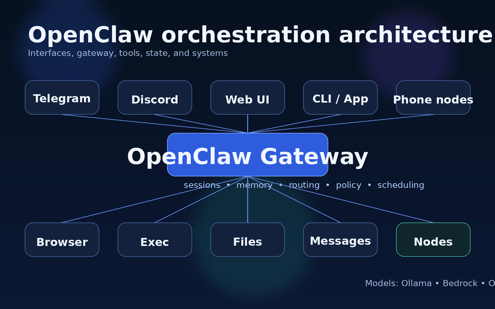
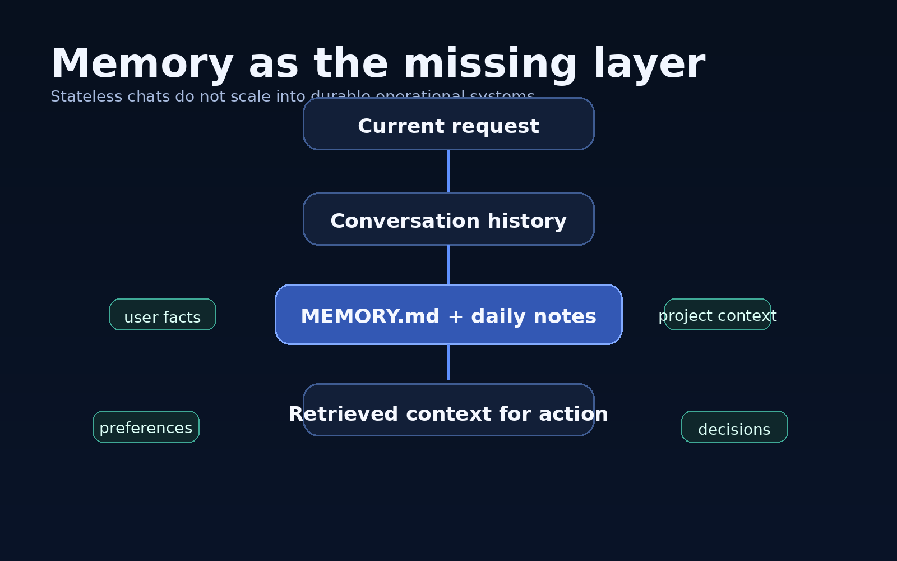
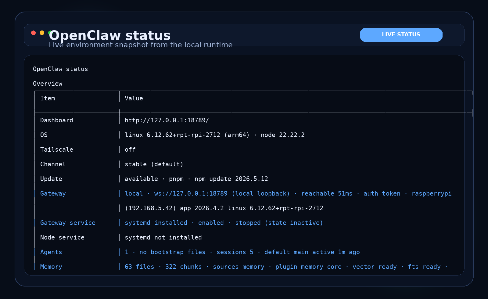
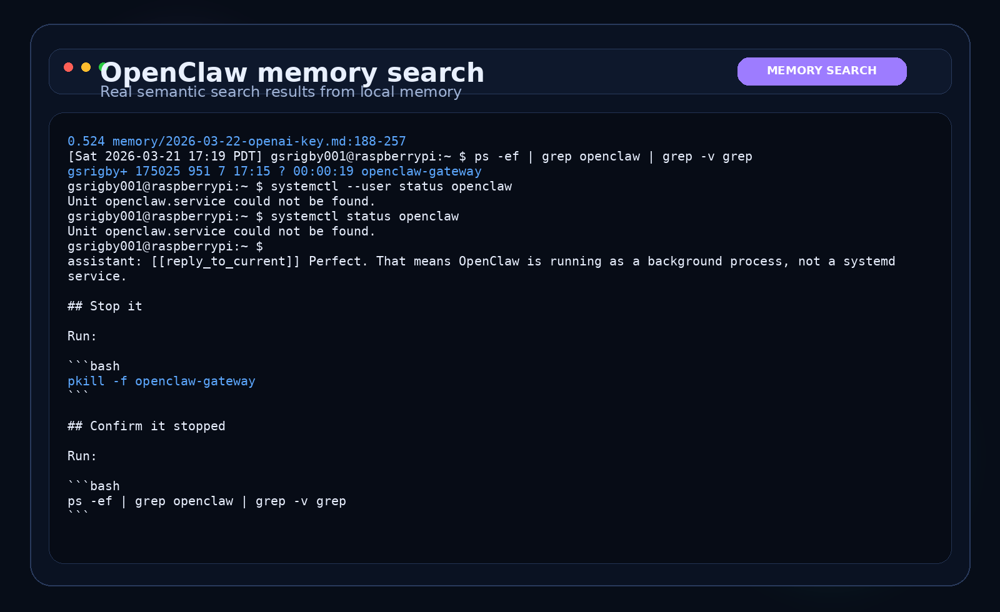
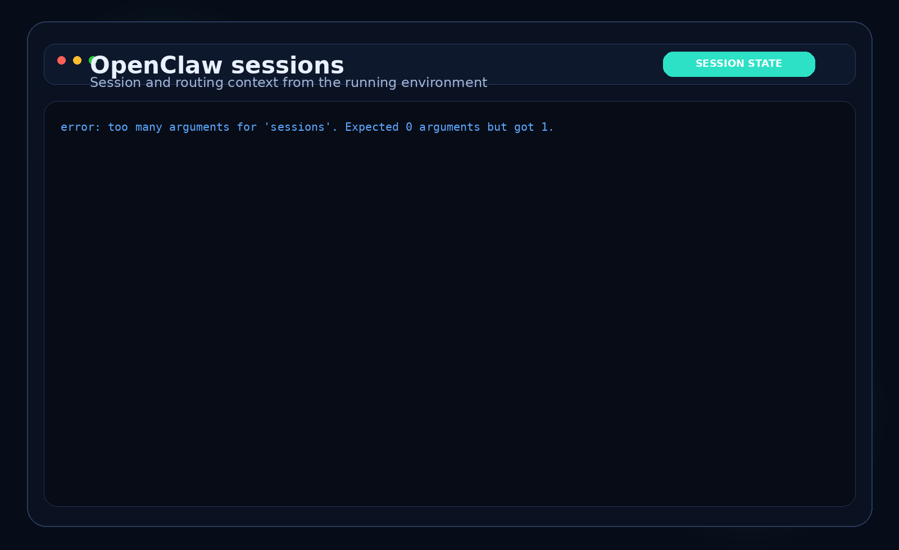

LLMs are changing shape
They are moving from chat interfaces toward systems that can plan, retrieve context, use tools, and complete multi-step work.
Lessons from running a local AI agent stack
The clearest way to understand OpenClaw is to start with the industry shift. LLMs are moving from chat interfaces toward operational systems. OpenClaw is not the model. It is the runtime that coordinates models, tools, memory, workflows, and execution logic so an AI system can actually operate.
Executive summary
They are moving from chat interfaces toward systems that can plan, retrieve context, use tools, and complete multi-step work.
It coordinates models, tools, memory, workflows, and execution logic. It is the runtime layer, not the model itself.
Workflow design, tool access, memory, and governance create far more practical value than raw model quality alone.
Self-hosted and hybrid AI stacks are now practical enough for serious prototyping, learning, and targeted operational use.
The industry shift
The winning mental model is a progression. Each step adds more operational depth, more continuity, and more leverage.
Raw model quality still matters, but the strategic moat is moving upward into orchestration, memory, tooling, and reliability.
Getting the right information to the model at the right time is becoming just as important as the model itself.
Without durable state and retrieval, agents keep acting like impressive amnesiacs instead of useful teammates.
What is OpenClaw?
OpenClaw coordinates models, tools, memory, workflows, and execution logic. It is not the model itself. It is the control plane around the model.
The model does the reasoning. The runtime decides what the model sees, what tools it can call, where memory lives, how sessions are routed, and what happens next when real work is underway.
The mental model
Reasoning engine
Capability or action
Reusable methodology
Multi-step process
Decision-making coordinator
Persistent state and context
Prompting is no longer just phrasing. Behavioral engineering, governance, workflow prompts, and memory prompts are all becoming part of the control plane for AI systems.
Enterprise workflow
This is the key operational leap. The value is not in one brilliant answer. It is in consistent execution across context retrieval, planning, tool use, and validation.
The task starts with an ambiguous human need, not a neatly scoped API call.
The system turns intent into an execution path rather than jumping straight into text generation.
Prior notes, files, and durable context are pulled in before action begins.
The agent reaches outside the prompt window and interacts with systems.
The runtime can inspect outcomes, continue, retry, or adjust course.
The output can be a message, file, report, workflow result, or follow-up action.

Project structure
Behavioral identity
It defines the behavioral identity of the AI system. It contains operating principles, constraints, tone, prioritization logic, and autonomy boundaries.
Design implication
When prompt layers shape reasoning, tone, memory discipline, and tool usage, prompt engineering stops being copywriting and becomes systems engineering.
Architecture overview
Once you accept that an agent is an operating system around a model, the architecture becomes intuitive. A single long-lived gateway owns messaging surfaces, manages sessions, and drives tools on the host or in sandboxes.

MCPs standardize how AI systems interact with tools and data, enabling modularity, reusable integrations, and cleaner governance.
Windows workstation, RTX 4080, Docker isolation, local models, OpenClaw orchestration, MCP servers, and experimental memory systems.
The differentiator is not that the model is smarter in theory. It is that the runtime can actually operate across tools and environments.
The missing layer
Architecture alone is not enough. Stateless chats do not hold up operationally. Persistent systems need long-term memory, project continuity, and reliable retrieval of relevant context.

Retrieval quality, salience, governance, and memory hygiene remain hard problems. Reliable operational context is still one of the biggest open challenges in agent systems.
Governance and risk
The moment an agent can act, the safety conversation changes. It is no longer only about bad answers. It becomes about bad actions, runaway loops, permission boundaries, and observability.
Tool permissions, credential isolation, and channel access rules define what the system can safely touch.
Sandboxing and execution separation help reduce blast radius when the model does something dumb.
Hallucinated actions, brittle plans, and infinite loops become practical engineering issues, not abstract ones.
Human approvals, policy checks, allowlists, and scoped sessions matter more as agent capability increases.
Cost control and observability become part of governance because an active runtime can spend real money and time.
Enterprise uptake depends less on demos and more on whether governance can keep up with capability.
Where this is going
Demo / screenshots
The final step is proof. Screenshots are more persuasive than generic stock art because they show the system behaving like a runtime, not merely describing itself.

Actual local runtime status showing gateway reachability, channels, sessions, and security posture.

Real local semantic memory retrieval, which makes the continuity story concrete.

Shows the multi-session runtime behavior that separates an orchestrator from a basic chat app.
Bottom line
The strategic story is not just better models. It is better orchestration. OpenClaw makes that visible by combining models with memory, workflows, tools, sessions, messaging, browser control, local execution, and device connectivity into a single operational runtime.
This page is based on the provided presentation flow and grounded in OpenClaw documentation on architecture, features, browser control, sandboxing, and memory.